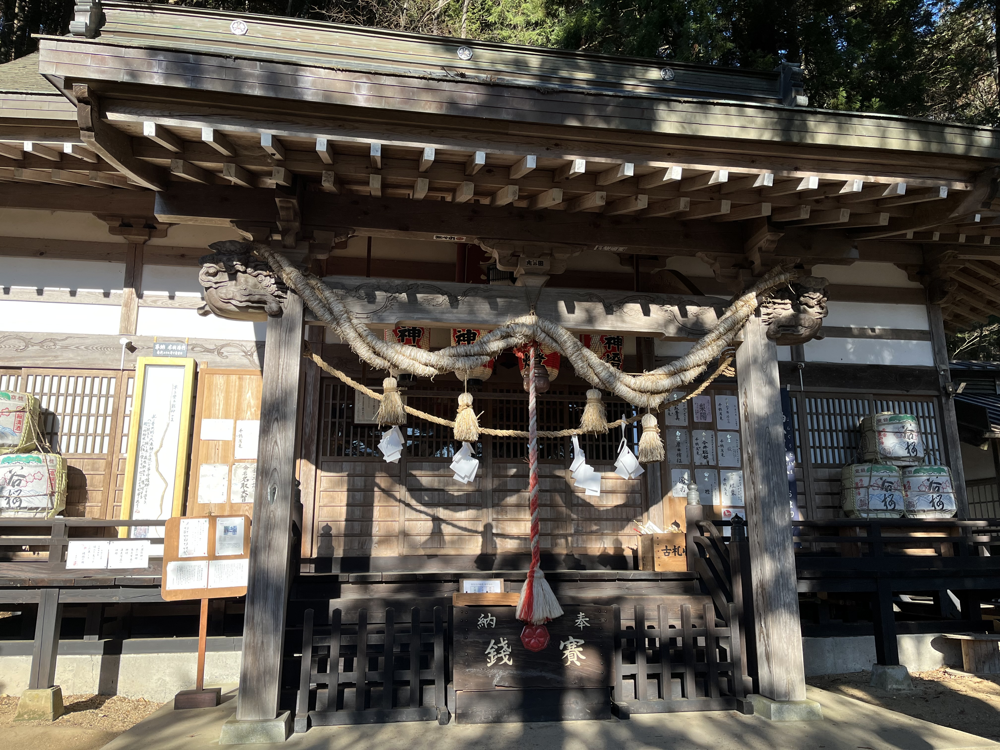
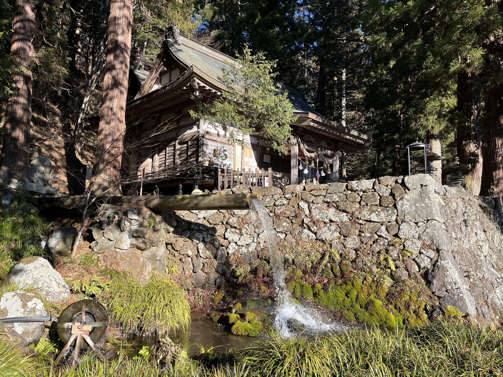

【2026山梨神社巡り】身曾岐神社、大滝神社、若宮八幡宮の訪問記
2026年の初詣、山梨県北杜市と甲斐市にある身曾岐神社、大滝神社、若宮八幡宮を訪問しました。
新年の初詣として、自然豊かな環境の中で参拝し、それぞれの神社の歴史や特徴を感じることができました。
以下では、各神社の詳細な情報、写真、アクセス方法、御朱印について紹介します。山梨県内の神社巡りを計画している方にとって、参考になる内容になれたら幸いです。
☆身曾岐神社☆
まずは、北杜市にある身曾岐神社を訪問しました。身曾岐神社は、自然豊かな環境の中に位置し、静寂な雰囲気が漂っています。参道を歩くと、鳥居や拝殿が見えてきます。
参拝後は、境内の散策を楽しみ、御朱印もいただきました。
身曾岐神社は、アーティストのゆずの北川さんが購入したことが有名であり、聖地としても知られています。また地元の方に後日お話を聞く機会があり、身曾岐神社のことを一部ではゆず神社と呼ぶなどとお伺いいたしました。
行く際の注意点として、北杜市は比較的寒い地域であり、冬季は雪や凍結の可能性があるため、訪問時には防寒対策をしっかりと行い、車でのアクセスの場合はスタッドレスタイヤの装着をおすすめします。
★写真一覧★


アクセス情報
- 所在地：山梨県北杜市小淵沢町上笹尾3401
- 駐車場：あり
- アクセス：小淵沢ICより車で5分程度
- 滞在時間：約1時間
- 御朱印：あり
☆大滝神社☆
次に、大滝神社を訪問しました。大滝神社は、身曾岐神社から車で約10分の距離に位置し、自然の中に佇む静かな神社です。
日本の名水百選にも選ばれた湧水があり、参拝者はその清らかな川のせせらぎを楽しむことができます。
雰囲気は、幻想的な世界とでも言えるような、神秘的な空気が漂っていました。
水が綺麗だからか、周りの木々を始めとした自然の緑がより鮮やかに見え、心が洗われるような感覚を覚えました。
御朱印は3種類あり、書置きでの対応でした。無人ということもあり、御朱印を頂く際には、お賽銭箱にお金を入れて、御朱印を頂く形になります。そのため小銭を事前に用意することがおすすめです。
★写真一覧★


アクセス情報
- 所在地：山梨県北杜市小淵沢町上笹尾2738
- 駐車場：あり
- アクセス：小淵沢ICより車で15分程度(身曾岐神社から10分程度)
- 滞在時間：約45分
- 御朱印：あり(書置き＆無人)
☆若宮八幡宮☆
本日最後に訪問したのは、甲斐市にある若宮八幡宮です。
山梨県韮崎市出身であるノーベル医学生理学賞を受賞した大村智博士を寿ぎ、イベルメクチンの構造式の模様の御守があることでも有名な神社です。
韮崎駅付近と街中に位置しており、アクセスが良く、参拝者も多く訪れる神社です。
雰囲気としては、街中にある神社ということもあり、身曾岐神社や大滝神社のような自然の中に佇む神社とは異なり、街中から急に神社の境内に入るような感覚で、街中の喧騒から離れた静かな空間が広がっていました。
★写真一覧★


アクセス情報
- 所在地： 山梨県韮崎市若宮1丁目4-14
- 駐車場：あり(初詣期間は臨時あり)
- アクセス：韮崎ICより車で5分、韮崎駅より徒歩10分程度
- 滞在時間：約30分
- 御朱印：あり
☆まとめ☆
本日は、山梨県北杜市と甲斐市にある身曾岐神社、大滝神社、若宮八幡宮を訪問しました。
それぞれの神社は、自然豊かな環境や歴史的な背景を持ち、参拝者にとって心地よい時間を提供してくれました。
今後も、山梨県内の神社巡りを続け、各神社の魅力を発信していきたいと思います。